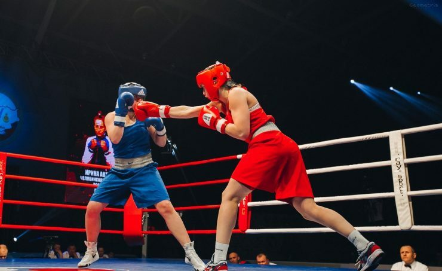
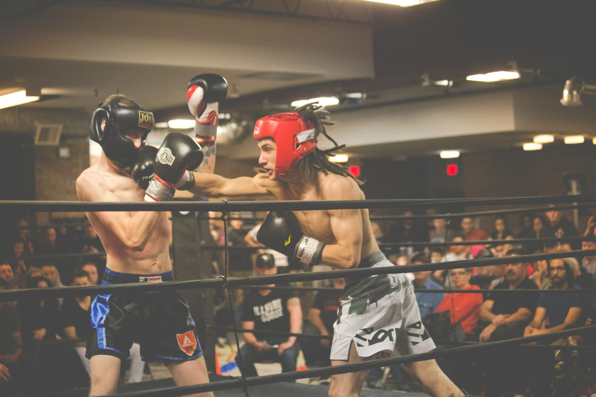
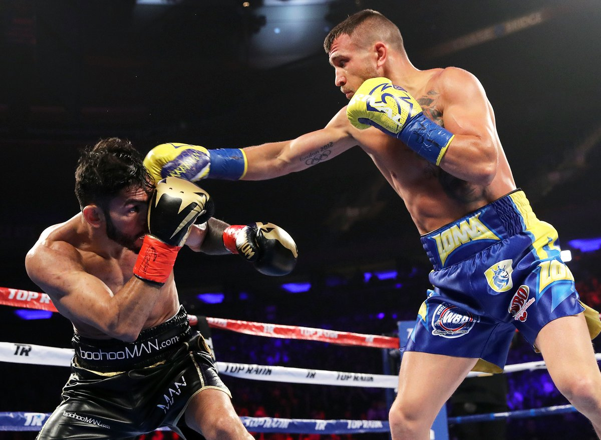
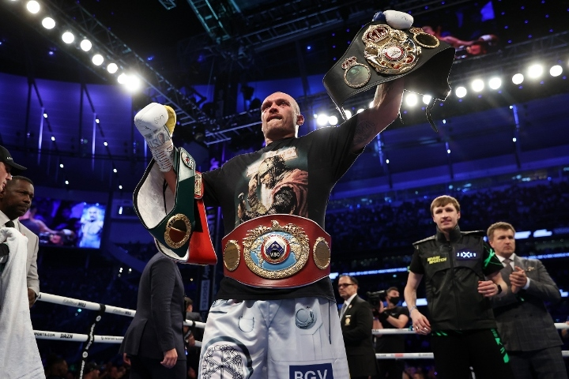

Boks to olimpijski sport kontaktowy(sztuka walki), w którym dozwolone są tylko uderzenia pięścią wyłącznie w specjalnych rękawicach.




W boksie trenujący wykonuje zrównoważone ćwiczenia aerobowe i beztlenowe, dzięki którym organizm jest w pełni nasycony tlenem. Ćwiczenia aerobowe - bieganie, skakanka, kardio. W rezultacie wzrasta ogólna wytrzymałość, wzmacnia się układ sercowo-naczyniowy. Dużym plusem boksu jest to, że bardzo szybko sprawia, że ciało jest piękne, wytrzymałe, elastyczne, proporcjonalnie rozwinięte fizycznie, ponieważ pracują wszystkie grupy mięśniowe. Boks to nie tylko bicie.
Korzyści z uprawiania Boksu:
Hartowanie charakteru i woli
Rozwój wytrzymałości i odwagi
Rozwój dyscypliny i samokontroli
Rozwój reakcji i koordynacji ruchów
Doskonała okazja do "wyzwolenia się" i emocjonalnego rozładowania
Zajęcia są przydatne zarówno dla kobiet, jak i mężczyzn
Boks ma pozytywny wpływ na pracę płuc i serca
Poprawia się uważność, co pozwala szybko reagować na sytuacje